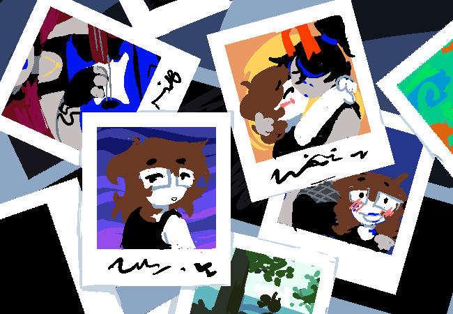

MAXXXX: andAfter that
MAXXXX: we justKept talking online
MAXXXX: and weStayed up wayToo late, just to beAble to talkOne on One witch eachother
MAXXXX: day byDay we grewCloser
MAXXXX: youWere there forMe for theGood and theBad
MAXXXX: and iWas too
MAXXXX: it isSo obvious retrospectively
MAXXXX: i wasIn love withYou for soLong before iRealized
MAXXXX: your voice, yourArt
MAXXXX: an amazingPerson, all around
MAXXXX: iCant believe howLucky i am
MAXXXX: and evenMore pathetic behaviour from me:
MAXXXX: everySingle time iGot to seeYour face inPerson something wriggledInside me
MAXXXX: i criedWhen you went backHome, and iMissed you soBadly
MAXXXX: evenIf we didNot get toSee eachotherMuch before
MAXXXX: i loved, andStill do, havingYou nearby